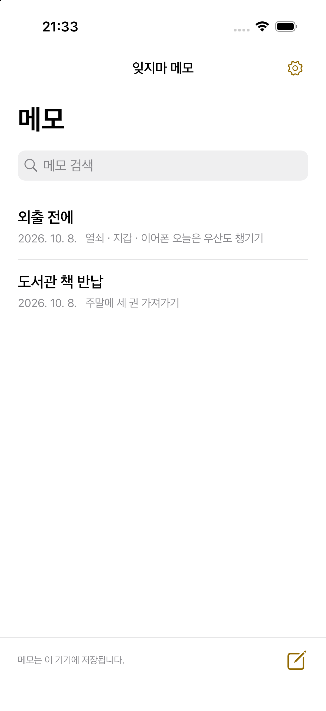

쓰고. 고르고. 눈에 보이게.
01
메모를 열고 쓰면 자동 저장됩니다.
02
메모의 홈 화면에 추가를 누르고 기기의 안내에 따라 위젯을 추가하세요.
03
메모를 누르면 편집 화면이 열립니다.
쓰기와 읽기를 간단하게.
세 가지 글자 크기
보통, 크게, 아주 크게. 긴 글은 눌러서 전체 내용을 읽으세요.
메모를 가까이
가입 없이 기기에 저장합니다. 삭제한 메모는 30일 동안 복원할 수 있습니다.
10개 언어 지원
일본어, 영어, 한국어, 중국어 간체·번체, 스페인어, 프랑스어, 독일어, 이탈리아어, 브라질 포르투갈어.
광고
무료 앱의 메모 목록 아래에 배너 광고 하나를 표시할 예정입니다. 편집 화면과 위젯에는 광고가 없습니다. 광고가 로드되지 않아도 메모를 사용할 수 있습니다.